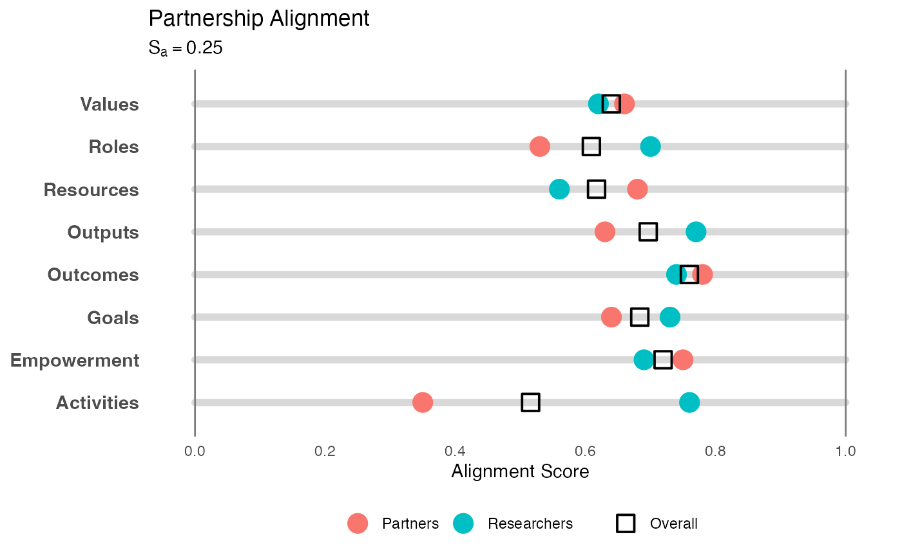

Visualize Researcher-Partner Alignment (Abacus Plot)
Source:R/visualize_alignment_abacus.R
visualize_abacus.RdCreates a "Single Rail Abacus" plot to visualize alignment. This method places "beads" (representing ratings) onto category "rails," providing a clear view of both central tendency and divergence on a linear scale.
Usage
visualize_abacus(
analysis_object,
project_title = "Project Alignment Visualization",
point_size = 5
)Arguments
- analysis_object
An object of class
alignment_analysisproduced byanalyze_alignment.- project_title
String. The title of the plot. Defaults to "Project Alignment Visualization".
- point_size
Numeric. The size of the main median bead. Defaults to 5.
Details
Methodology: Inspired by the "Degree of Collaboration Tool" (Doberneck & Dann, 2019), this visualization maps multiple dimensions of a project onto horizontal tracks (0 to 1). It is adapted here for the CEnTR*IMPACT framework (Price, 2024) to show the consensus and spread of survey ratings.
Visual Elements:
Rails: Horizontal gray bars representing the full continuum of possible agreement (0 to 1).
Solid Beads: The median rating for each group (Researchers vs. Partners).
Transparent Beads: The minimum and maximum ratings, showing the spread or disagreement within a group.
Overall Square: The geometric mean (consensus) rating.
This format is particularly useful for identifying "outliers" (individuals who rated extremely high or low) relative to the group's median.
References
Doberneck, D. M., & Dann, S. L. (2019). The Degree of Collaboration Tool. Engagement Scholarship. Available at: https://engagementscholarship.org/upload/eesw/2022/2-5%20%20Doberneck%20_%20Dann%20(2019)%20The%20Degree%20of%20Collaboration%20Tool.pdf
Price, J. F. (2024). CEnTR*IMPACT: Community Engaged and Transformative Research – Inclusive Measurement of Projects & Community Transformation. CUMU. Available at: https://cumuonline.org/wp-content/uploads/2024-CUMU-Collaboratory-Fellowship-Report.pdf
Examples
# 1. Generate and analyze data
data <- generate_alignment_data()
results <- analyze_alignment(data)
# 2. Create the abacus visualization
p <- visualize_abacus(results, project_title = "Partnership Alignment")
# 3. Display the plot
print(p)
